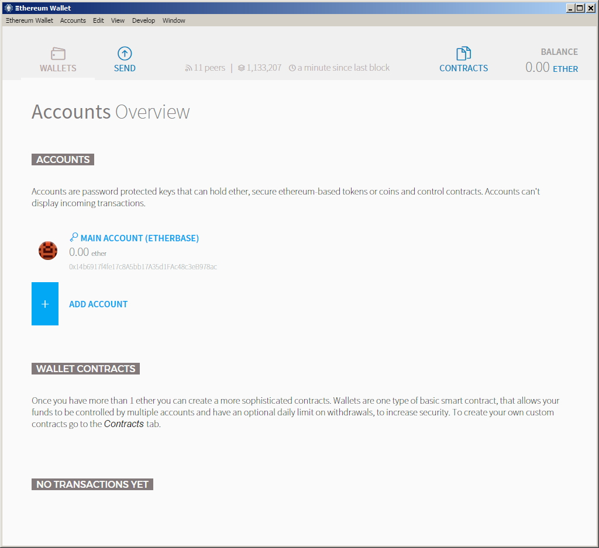

账户管理¶
账户¶
账户在以太坊中扮演了一个核心角色。账户有两种类型： externally owned accounts （EOAs，即外部拥有的账户，译者注）和 contract accounts （合约账户，译者注）。这里我们聚焦在外部拥有的账户上，简称为 账户 。合约账户将被简称为 合约 ，在 合约的章节里详细讨论 。结合外部拥有的账户和合约，这个概念上的账户实体可以归结为 状态对象 。 这些实体是有状态的：账户有余额，合约账户既有余额也有合约数据的存储。所有账户的状态，就是一个以太坊网络中伴随着每个区块的更新所达成共识的状态。账户就是所有的实际用户通过交易与以太坊进行交互的必需媒介。
如果我们把以太坊限定为只有外部拥有的账户，只允许它们之间的交易，那我们就做成了一个“altcoin”（即山寨币，译者注）系统，本身并不如比特币网络强大，只能用来交易以太币。
账户代表着外部代理人的实体（比如真人用户、挖矿的节点或自动化的代理等）。账户使用公钥加密的方法对交易进行签名，以便EVM可以安全的校验交易发送者的身份。
秘钥文件¶
每个账户都由一对秘钥所定义，就是私钥和公钥。账户根据由其公钥的后20字节导出的 地址 进行索引编排。每一个私钥/地址对被编码在一个 秘钥文件 中，这个文件是JSON格式的文本文件，可以用任意文本编辑器修改。你账号的私钥是你的秘钥文件中最紧要的内容，它会由你创建账号时输入的密码进行加密处理。秘钥文件保存在你本地节点的data目录的 keystore 子目录下。请确保有定期备份你的秘钥文件。更多信息请参考 备份和恢复账户 。
创建一个秘钥就相当于创建了一个账户。
- 你不需要告诉任何人你做了这件事
- 你不需要和区块链做任何同步
- 你不需要运行一个客户端
- 你甚至不需要接入互联网
当然，你的新账户不会包含任何以太币；但它已经是你的了。没有你的秘钥和密码，任何人都无法访问它。
在以太坊节点间拷贝单独的秘钥文件乃至整个目录是安全的。
Warning
请注意，如果你从其他节点添加了秘钥文件，账户的顺序可能会变化。所以请确保你没有在脚本或代码段中依赖或改变账户的索引。
创建账户¶
Warning
记住你的密码并备份你的秘钥文件。 你必须同时拥有秘钥文件和密码才能从一个账户中发起交易，包括发送以太币。请绝对地确保你有一个秘钥文件的拷贝并记住它的密码，把它们尽可能安全的保存。如果你丢失了秘钥文件或者忘记了你的密码，你将会失去账户中的所有以太币，这里没有任何迂回的方法。没有密码，想访问你的账户是不可能的，这里并没有 忘记密码 这样的选项。所以请别忘了它。
使用 geth account new¶
在安装了geth客户端之后，你就可以简单地在命令行终端上执行 geth account new 来创建账户。
你不需要运行geth客户端或者同步区块链数据就可以使用 geth account 命令。
$ geth account new
Your new account is locked with a password. Please give a password. Do not forget this password.
Passphrase:
Repeat Passphrase:
Address: {168bc315a2ee09042d83d7c5811b533620531f67}
你也可以使用非交互方式来使用这个命令，只需要为 --password 选项增加一个纯文本密码文件的参数即可。文件内容直接为密码文本，也可以在最后加一个换行。
$ geth --password /path/to/password account new
Warning
--password 选项应该仅在可信环境中做测试或自动化时使用。把你的密码存到文件里或用其他方式暴露，通常不是个好主意。如果你一定要使用这个选项，请保证没有其他人能访问保存密码的文件。你可以在Mac/Linux系统中用以下方法实现这点。
touch /path/to/password
chmod 600 /path/to/password
cat > /path/to/password
>I type my pass
在 geth account 命令后加上 list 子命令，即可列出你的 keystore 目录下保存的所有账户信息。
$ geth account list
account #0: {a94f5374fce5edbc8e2a8697c15331677e6ebf0b}
account #1: {c385233b188811c9f355d4caec14df86d6248235}
account #2: {7f444580bfef4b9bc7e14eb7fb2a029336b07c9d}
账户信息文件的文件名格式为： UTC--<created_at UTC ISO8601>-<address hex> 。列表中数据的显示顺序是以字母为序，但因为时间戳是在最前边的，所以实际上就是以创建时间为序。
使用geth控制台¶
要使用geth，我们必须先用控制台模式启动geth。（或者你可以使用 geth attach 把geth关联到一个已经运行的控制台。）
> geth console 2>> file_to_log_output
instance: Geth/v1.4.0-unstable/linux/go1.5.1
coinbase: coinbase: [object Object]
at block: 865174 (Mon, 18 Jan 2016 02:58:53 GMT)
datadir: /home/USERNAME/.ethereum
控制台是你可以通过命令行的方式访问你的本地节点的地方。例如，你可以用以下命令列出你的账户。
> eth.accounts
{
code: -32000,
message: "no keys in store"
}
以上结果显示出你还没有账户。你可以在控制台创建账户。
> personal.newAccount()
Passphrase:
Repeat passphrase:
"0xb2f69ddf70297958e582a0cc98bce43294f1007d"
Note
记住：要使用安全性高、最好有随机性的密码。
我们刚刚创建了第一个账户。如果再尝试列出账户的话，我们就能看到这个新账户。
> eth.accounts
["0xb2f69ddf70297958e582a0cc98bce43294f1007d"]
使用Mist以太坊钱包¶
由于普通用户对命令行的厌恶，现在有了个基于GUI（图形用户界面）的方法：“官方的”Mist以太坊钱包。Mist以太坊钱包和它的双亲Mist项目是由以太坊基金会所资助的，所以也就有了“官方的”说法。钱包应用程序支持Linux、Mac OS X和Windows操作系统。
Warning
Mist钱包仍是个Beta版本，请意识到你需要自行承担相关风险。
使用GUI的Mist以太坊钱包创建账户不能再简单了。事实上，你的第一个账户已经在安装过程中创建出来了。
1、为你的操作系统 下载最新版的钱包应用 。因为实际上你是在运行一个geth全节点，所以第一次打开钱包应用时会触发一次与以太坊区块链的完全同步过程。
2、解压下载的文件，运行以太坊钱包可执行文件。

3、等待区块链的完全同步，然后跟随页面向导完成设置，你的第一个账户也会被创建出来。
4、当你第一次运行Mist以太坊钱包的时候，你会看到在安装过程中创建的账户。它会被默认的命名为 MAIN ACCOUNT (ETHERBASE)。
{kind=link}
5、创建额外的账户很容易，你只需要在应用界面中点击“ADD ACCOUNT”并输入密码即可。
Note
Mist钱包还在不断开发更新中，所以以上步骤也许会有变动。
在Mist中创建一个多重签名（Multi-Signature）的钱包¶
Mist以太坊钱包有一个选项，可以使用多重签名的钱包来保护你的钱包余额。多重签名钱包的好处就是当从你的账户余额中取出较大数额的结余时，需要多个账户的共同授权。为了使用多重签名钱包，你需要创建多个账户。
在Mist中创建账户文件非常简单。在’Accounts’中点击’Add Account’，选择一个容易记住的强密码（记住，没有忘记密码的选项），确认，你的账户就创建出来了。至少创建两个账户。第二个账户也可以创建到另外一台独立的计算机上（这么做，理论上更安全）。要创建多重签名钱包，你只需要第二个账户的公钥（账户地址，最好拷贝/粘贴，不要用手工录入，以免出错）。你的主账户会被用来创建多重签名的钱包合约，它应该在你想要创建多重签名钱包的计算机上。
现在你已经安全的创建了你的账户，记得备份它们。（如果你没做备份，一旦你的计算机坏掉，你讲失去你的所有账户余额。）在顶部菜单点击’Backup’选择’keystore’文件夹，选中它用拷贝命令（不要用剪切，这非常糟糕）。然后切换到桌面，右击空白区域，选择粘贴。你也许应该把这个新的’keystore’文件夹改名为’Ethereum-keystore-backup-year-month-day’，这样你以后可以很快的找到它。这时，你也可以把这个目录添加到一个zip/rar压缩包（甚至给压缩包加上密码，如果你要把它保存到线上的话），保存到U盘、刻录到CD或者上传到云存储服务中（比如Dropbox，Google Drive之类）。
你现在应该至少添加0.02以太币到你的主账户中（就是你要用来创建多重签名钱包的账户），这是你创建多重签名钱包所需的交易费。此外还需要1以太币以上的余额，因为Mist需要这个余额来确保有足够的’gas’来执行钱包中的合约交易。所以对于新用户来讲，你至少要有1.02以上的以太币。
当你创建一个多重签名钱包时，你需要输入与其关联的所有账户地址。建议你从Mist中各个账户的详情界面中拷贝/粘贴这些地址到一个文本编辑器（用记事本、kedit之类）。请不要手工输入这些地址，以免因为输入错误致使交易被发送到错误的地址而使你损失掉你的账户余额。
我们现在已经可以来创建多重签名钱包了。在’Wallet Contracts’下选择’Add Wallet Contract’，给它起个名字，选择账户的拥有者，选择’Multisignature Wallet Contract’，你将看到类似下面这样的消息：
“This is a joint account controlled by X owners. You can send up to X ether per day. Any transaction over that daily limit requires the confirmation of X owners.”
设置你想关联到这个多重签名钱包的任意数量的拥有者（账户），设置一个每日提取的上限（单独账户的提取数额），以及需要多少账户来批准超过这个上限的提取。
现在，把刚刚拷贝/粘贴到文本编辑器中的账户地址添加进来，确认所有的设置，然后点击下方的’Create’按钮。你需要输入你的账户密码来发送交易。而后就可以在’Wallet Contracts’中看到这个新钱包的状态为’creating’。
当钱包创建成功之后，你将可以看到合约地址。选中这个地址，把它拷贝/粘贴到文本编辑器，保存成新的文本文件’Ethereum-Wallet-Address.txt’或者任何你喜欢的名字。
现在，你要做的就是备份这个文件，就像你备份账户文件一样，之后你就可以在Eth中用这个地址加载你的多重签名钱包了。
如果你要恢复你的备份，可以简单的将’Ethereum-keystore-backup’拷贝回’keystore’目录，就像本节第一段讲的那样。如果在一台没有安装过Mist的计算机上全新安装Mist的话，你可能需要手工创建’keystore’目录。当我们要恢复一个多重签名钱包时，不用像我们之前创建它那样选择’Multisignature Wallet Contract’，我们可以直接选择’Import Wallet’。
故障排除：
- Mist没有同步。一个方案是通过NTP服务同步你的本地计算机硬件时间，然后重启。
- Mist在同步之后启动了，但却显示了一个空白界面。如果你是在使用一个基于Linux的操作系统（比如Ubuntu，Linux Mint之类）在运行第三方的视频驱动程序，那你可以试试安装厂商官方的视频驱动程序。
- “Wrong password”提示。这应该是Mist当前版本的一个错误提示。重启Mist，这个问题应该就消失了（当然，你要输入正确的密码）。
使用Eth¶
geth中与秘钥管理相关选项都可以在eth中以同样的方式使用。
以下是与账户相关的选项：
> eth account list // List all keys available in wallet.
> eth account new // Create a new key and add it to the wallet.
> eth account update [<uuid>|<address> , ... ] // Decrypt and re-encrypt given keys.
> eth account import [<uuid>|<file>|<secret-hex>] // Import keys from given source and place in wallet.
以下是与钱包相关的选项：
> eth wallet import <file> //Import a presale wallet.
Note
‘account import’仅能用来导入通用的秘钥文件。’wallet import’选项只能用来导入预售的钱包。
通过集成的控制台也是可以进行秘钥管理的（比如内置的控制台或者geth关联的）：
> web3.personal
{
listAccounts: [],
getListAccounts: function(callback),
lockAccount: function(),
newAccount: function(),
unlockAccount: function()
}
使用EthKey（将不再支持）¶
EthKey是个用C++实现的CLI（Command Line Interfaces，即命令行交互接口，译者注）工具，使你可以与以太坊钱包进行交互。你可以用它列出、核对、创建、删除和修改秘钥，也可以对交易进行核对、创建和签名。
我们假定你没有运行一个像eth这样的客户端或者其他的Aleth系列的客户端，如果有，你可以跳过这段。 要创建一个钱包，可以使用``ethkey``的``createwallet``命令：
> ethkey createwallet
请输入一个“超级管理员”密码来保护你的秘钥（让密码很健壮，即很难猜到，译者注）： 你会被要求输出“超级管理员”密码，它将保护你的隐私，作为你的所有秘钥的缺省密码。你需要再同样输入一次以确认密码。
Note
使用一个安全性高、最好有随机性的密码。
我们可以简单地用以下命令列出所有秘钥：
> ethkey list
No keys found.
它告诉我们，还没有创建任何秘钥。我们接下来将创建一个。
我们可以用``new``命令创建秘钥。使用这个命令，我们必须指定一个名字，就是在钱包里的账户名字。让我们把它叫做“test”。
> ethkey new test
输入一个密码来保护这个账户（或者不输入，使用“超级管理员”密码）。 系统会提示你输入密码来保护这个秘钥，如果你直接按回车，它就将使用缺省的“超级管理员”密码。通常，这样的做就使你使用这个密钥时不再需要输入密码（因为系统记住了“超级管理员”密码）。 一般来讲，你应该使用不同的密码以保护你的账号，当一个密码被破解之后不会导致其他账户也被访问；但出于使用上的方便，对于一些不太重要的账户，你也许会决定使用同一个密码。
这里，让我们用一个极富想象力的密码‘123’。（除了对于临时的测试账户，永远不要使用这么简单地密码。） 输入密码之后，系统会要求你再确认，所以再输入一次‘123’。 这里还需要你提供一个密码提示信息，它将会在要求你输入密码时显示。这个提示也会保存在钱包中，并由“超级管理员”密码所保护。这里我们使用一个极其糟糕的提示“321 backwards”（把321倒过来）。
> ethkey new test
Enter a passphrase with which to secure this account (or nothing to use the master passphrase):
Please confirm the passphrase by entering it again:
Enter a hint to help you remember this passphrase: 321 backwards
Created key 055dde03-47ff-dded-8950-0fe39b1fa101
Name: test
Password hint: 321 backwards
ICAP: XE472EVKU3CGMJF2YQ0J9RO1Y90BC0LDFZ
Raw hex: 0092e965928626f8880629cec353d3fd7ca5974f
所有正常的ICAP（即Inter Exchange Client Address Protocol，译者注）地址都会由‘XE’开头，这样你可以很容易的辨认出来。同时也请注意，这个秘钥还有一个额外的标识，也就是所谓的UUID（即Universal Unique Identifier，译者注）。这是一个秘钥的统一唯一标识，不会对账户有任何影响，也不会帮助攻击者揭示任何关于你本人的信息。它也会反映到可以在~/.web3/keys(Mac or Linux)或$HOME/AppData/Web3/keys(Windows)目录下找到的秘钥文件名上。 现在我们列出钱包中的的秘钥，确认它已经创建好了。
> ethkey list
055dde03-47ff-dded-8950-0fe39b1fa101 0092e965… XE472EVKU3CGMJF2YQ0J9RO1Y90BC0LDFZ test
这里会每行显示一个秘钥。在上边的例子中，秘钥会保存在文件【055dde...】中，ICAP地址为【XE472EVK...】。显然这很难记住，于是它还有个简单的名字“test”。
导入预售钱包¶
使用Mist以太坊客户端¶
使用Mist以太坊钱包的GUI来导入预售钱包非常容易。事实上在安装过程中你就会被询问是否需要导入预售钱包。
Warning
Mist钱包仍是个beta版本的软件，请意识到相关风险需要由你自行承担。
关于安装Mist以太坊钱包请参考之前的章节 使用Mist以太坊钱包创建账户 。
你可以简单地拖拽你的 .json 预售钱包文件到指定的区域，输入你的密码来导入你的预售账户。

如果你没有在安装客户端时导入预售钱包，你也可以在任何时候从 Accounts 菜单中选择 Import Pre-sale Accounts 来做这件事。
Note
Mist钱包仍然在持续开发，所以以上说明的细节可能会有所更改。
使用geth¶
如果你有个独立的geth安装，你可以通过如下命令完成预售钱包的导入：
geth wallet import /path/to/my/presale-wallet.json
你会被要求输入密码。
更新一个账户¶
你可以更新你的秘钥文件到最新的秘钥文件格式，或更改秘钥文件的密码。
使用geth¶
你可以使用 update 子命令，带上账户地址或索引作为参数来更新一个既有账户。记住，账户的索引反映了账户的创建顺序（包含了时间信息的秘钥文件名的字母顺序）。
geth account update b0047c606f3af7392e073ed13253f8f4710b08b6
或者
geth account update 2
例如:
$ geth account update a94f5374fce5edbc8e2a8697c15331677e6ebf0b
Unlocking account a94f5374fce5edbc8e2a8697c15331677e6ebf0b | Attempt 1/3
Passphrase:
0xa94f5374fce5edbc8e2a8697c15331677e6ebf0b
account 'a94f5374fce5edbc8e2a8697c15331677e6ebf0b' unlocked.
Please give a new password. Do not forget this password.
Passphrase:
Repeat Passphrase:
0xa94f5374fce5edbc8e2a8697c15331677e6ebf0b
账户会被用加密格式保存为新的版本，你会被询问相应的密码以解锁账户，而后要输入一个新密码来保护更新后的文件。相同的方法也适用于将一个不再支持的秘钥文件格式更新为最新，或者修改账户的密码。
你也可以使用 --password 选项来指定密码文件，而不再手工输入密码。
geth --password <passwordfile> account update a94f5374fce5edbc8e2a8697c15331677e6ebf0bs
由于只能指定一个密码文件，所以这种方式仅可用于更新账户秘钥文件格式，如果要修改密码，只能使用两次交互的方式。
Note
账户更新会有个副作用，就是会导致你的账户顺序变化。在一次更新完成之后，更新的这个秘钥所有之前版本的文件都会被删除。
备份和恢复账户¶
手工备份/恢复¶
你必须拥有一个账户的秘钥文件来使你可以从这个账户中发送交易。秘钥文件可以在以太坊节点目录下的【keystore】子目录下找到。各平台中缺省的数据目录位置如下：
- Windows:
C:\Users\username\%appdata%\Roaming\Ethereum\keystore - Linux:
~/.ethereum/keystore - Mac:
~/Library/Ethereum/keystore
要备份秘钥文件（账户），可以拷贝 keystore 目录下的文件，或者直接整个拷贝 keystore 目录。
要恢复秘钥文件（账户），把秘钥文件拷贝回 keystore 目录即可。
导入非加密的私钥¶
geth支持导入一个非加密的私钥。
geth account import /path/to/<keyfile>
这个命令会从文本文件 <keyfile> 导入一个非加密的私钥，创建一个新账户并打印其地址。
这个秘钥文件应该包含转换为16进制的合法的EC（Ellipse Curve，即椭圆曲线，译者注）字节数据（也就是由椭圆曲线加密算法生成的原始私钥二进制数值的16进制表示，译者注）。
账户会被保存为加密格式，你会被要求输入一个密码。请务必记住这个密码以便以后能解锁你的账户。
以下是一个指定了数据目录的例子。如果未使用 --datadir 选项，新账户会被创建到缺省的数据目录，秘钥文件会保存在 keystore 子目录下。
$ geth --datadir /someOtherEthDataDir account import ./key.prv
The new account will be encrypted with a passphrase.
Please enter a passphrase now.
Passphrase:
Repeat Passphrase:
Address: {7f444580bfef4b9bc7e14eb7fb2a029336b07c9d}
你也可以使用 --password 选项指定密码文件。
geth --password <passwordfile> account import <keyfile>
Note
由于你可以直接拷贝你的加密账户到不同的以太坊节点，所以这种导入/导出操作在这种情况下就不需要了。
Warning
当你拷贝秘钥文件到某个节点的 keystore 目录下时，账户的顺序可能会发生变化。所以请确保你没有在脚本中依赖账户的顺序，或者仔细检查并更新脚本中使用的索引。